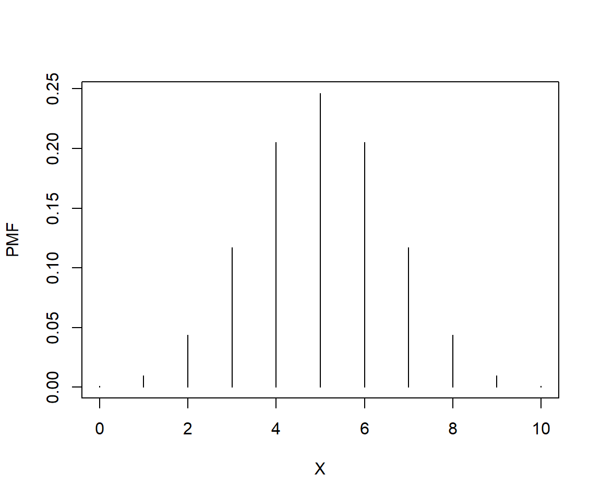
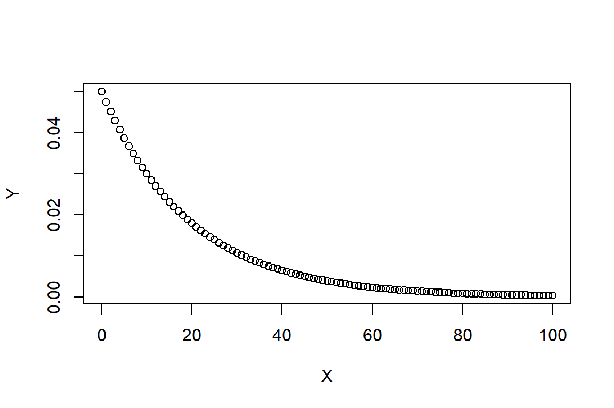
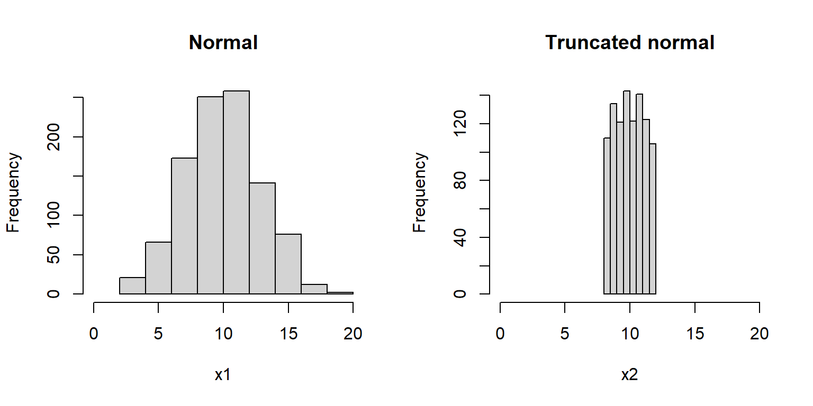
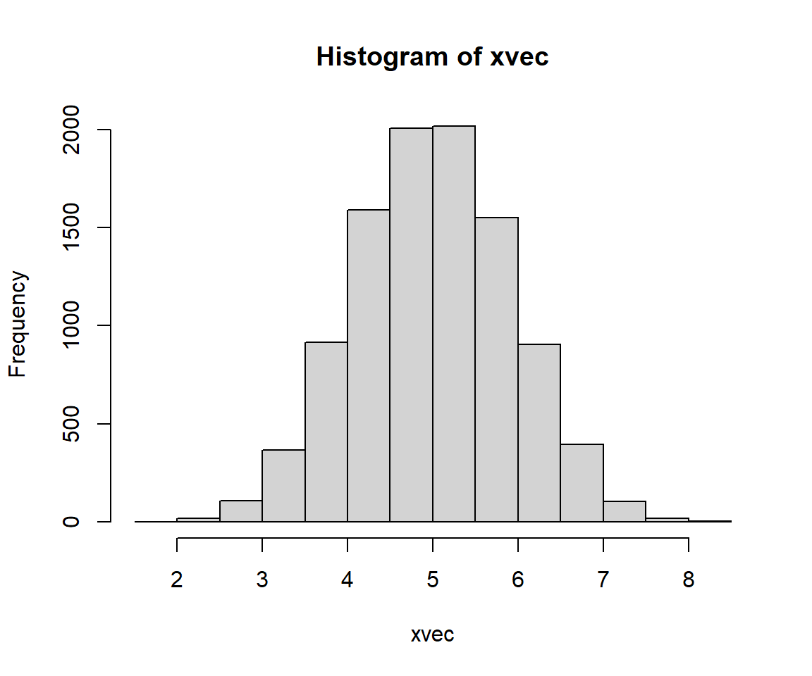

4.5 Data transformations
Data transformation is the proces of changing the values in your data according to a function. This is usually done to make the data better conform to the assumptions of a statistical test, or to make graphs easier to interpret. Transformation is done to make patterns easier to detect. In many fields transformations may be standard practice, and with good reason. Just make sure that you understand what the transform function is doing, and most importantly, why you are transforming your data.
4.5.1 Why transform?
Data transformation is the process changing the values of your data according to a function. This is usually done so that the data better conform to the assumptions of a statistical test, or to make graphs of your data more interpretable. The functions that transform data are usually called “transforms”. There are many transforms out there, but only a few are very common in biology. All convert values on the original scale to values on the transformed scale. Variables often have different properties after a transformation, such as normality, or a different domain, or a different distribution shape. In general, a function for transforming data should be deterministic and invertible:
- Deterministic: means that the function always returns the same transformed value for a given input.
- Invertible: means that values on the transformed scale can be converted unambiguously to values on the original scale. In mathematics such functions are also called “bijections”.
Data transformations are commonly used to make data fit certain distributions. For example, consider the figure below:
a <- rlnorm(1000, 1.5, 2)
par(mfrow=c(1,2))
hist(a)
hist(log(a))
The left panel shows data with mostly small values and a strong positive skew. The right panel shows the same data on the log scale. Notice how the log-transformed values look much more like a normal distribution. This is very important for many statistical methods, which require normality either in the values or in the residuals. The log-transformed plot also lets us see more details about the distribution that are obscured on the original scale.
4.5.2 Transforms vs. link functions
In generalized linear models (GLM) the response variable is modeled on a scale defined by a link function. That link function works a little like a transform, and is often confused with a transform, but it is not a transform. The figure below shows an example of this: the response variable on its original scale (right panel), a proportion, is analyzed on the logit scale (left panel). The ranks of observations do not change, but their values do. Additionally, putting the values on another scale can affect the variance of those values.

GLM link functions are not transforms because the variance is still modeled on the original scale. However, when data are transformed and then analyzed, the variance is modeled on the transformed scale. The equations below show the differences between a Gaussian GLM with a link function and an ordinary linear model on transformed data. Notice the difference in how each model includes stochasticity.
Linear model (LM) with transformation
\[y_i = e^{z_i}\]
\[ z_i \sim Normal\left(mu_i,\sigma^2 \right)\]
\[mu_i = f\left(\theta \right)\]
Generalized linear model (GLM) with link function
\[ y_i \sim Normal\left(z_i,\sigma^2 \right) \]
\[ z_i = e^{mu_i} \]
\[mu_i = f\left(\theta \right)\]
In the LM, the expected value \(mu_i\) and its variance are both on the log scale. In the GLM, \(mu_i\) is on the log scale but the variance in observed values is not. This difference can have important consequences on the estimates of a statistical model. See the example here for a worked example.
4.5.3 Log transformation
The log-transform is one of the most common transforms in biology. It is simply the logarithm of the values39. Most biologists use either the natural logarithm (loge, ln or just log) or the base-10 logarithm (log10). The choice of base is not that important, because any log-transform will accomplish the same effect. The default in math and statistics (and in R) is the natural logarithm. Log10 is also very common in biology and engineering. It is sometimes called the “common log”, but most people just say “log 10” when referring to this function. Whatever base you use, just be consistent and make it clear to your audience what you did40. It is depressingly common to be unable to use values from old papers because they didn’t specify which base logarithm they used.
There are usually two reasons to use a log-transform: normalization (i.e., variance stabilization) and positivity. As seen above, many variables that appear non-normal turn out to be normally distributed on a logarithmic scale. This often occurs when something about the values is multiplicative in nature. For example, body sizes, population sizes, and bank account balances are often log-normally distributed. This is because these quantities tend to grow at a rate that is proportional to their current size . Transforming to the logarithmic scale changes multiplicative changes to additive changes. The figure below shows how values separated by a factor of 2 on the linear scale map to values separated by 1 (i.e., 20) on the log2 scale. Values separated by a common scaling factor on the original scale are mapped to values separated by a common additive constant on the log scale41.

As a side effect of this normalization, log-transformation allows researchers to work with variables that vary over several orders of magnitude. This is because scalar multiplication on the untransformed scale is the same as addition on the log-transformed scale42. The figure below shows how values ranging from 0.001 to 1000 (spanning 6 orders of magnitude) can be managed on the log-transformed scale.

The second reason that the log-transform is commonly used is to ensure that values are always positive. One of the properties of the exponential function is that for any positive base, raising that base to a real power will always return a positive result. For this reason, it is common practice to analyze variables with a positive domain on the logarithmic scale. Such variables include lengths, masses, and counts, which must be positive or non-negative. Log transformation can ensure that your analysis does not predict impossibilities like negative masses.
4.5.3.1 Log transformation in R
Values in a data frame can be log-transformed with the log() (natural log) or log10() (log10) function. Other bases can be used via arguments to the log() function (e.g., log(8,base=2)). It is usually a good idea to keep the transformed values in their own variable, rather than overwriting the original values. This way you can quickly access the original values without having to back-transform. It is often useful to have the original values around for making figures. Keeping the original values also means you don’t have to remember whether a variable or object contains the original or transformed values.
# spare copy:
x <- iris
# natural log transform:
x$log.petal.len <- log(x$Petal.Length)
# log base 10 transform:
x$log.petal.wid <- log10(x$Petal.Width)You can also log-transform many variables at once using the function apply(). In a data frame this means apply-ing the log() function to multiple columns (margin 2).
# load the dataset from package MASS
data(crabs, package="MASS")
# make a spare copy
x <- crabs
head(x)## sp sex index FL RW CL CW BD
## 1 B M 1 8.1 6.7 16.1 19.0 7.0
## 2 B M 2 8.8 7.7 18.1 20.8 7.4
## 3 B M 3 9.2 7.8 19.0 22.4 7.7
## 4 B M 4 9.6 7.9 20.1 23.1 8.2
## 5 B M 5 9.8 8.0 20.3 23.0 8.2
## 6 B M 6 10.8 9.0 23.0 26.5 9.8# overwrite (transform in place)
# (ok but can cause headaches later)
x[,4:8] <- apply(x[,4:8], 2, log)
head(x)## sp sex index FL RW CL CW BD
## 1 B M 1 2.091864 1.902108 2.778819 2.944439 1.945910
## 2 B M 2 2.174752 2.041220 2.895912 3.034953 2.001480
## 3 B M 3 2.219203 2.054124 2.944439 3.109061 2.041220
## 4 B M 4 2.261763 2.066863 3.000720 3.139833 2.104134
## 5 B M 5 2.282382 2.079442 3.010621 3.135494 2.104134
## 6 B M 6 2.379546 2.197225 3.135494 3.277145 2.282382# better way:
# make new variables and
# add to original data frame (better)
x <- crabs
z <- apply(x[,4:8], 2, log)
z <- as.data.frame(z)
names(z) <- paste(names(z), "log", sep=".")
x <- cbind(x,z)
head(x)## sp sex index FL RW CL CW BD FL.log RW.log CL.log CW.log
## 1 B M 1 8.1 6.7 16.1 19.0 7.0 2.091864 1.902108 2.778819 2.944439
## 2 B M 2 8.8 7.7 18.1 20.8 7.4 2.174752 2.041220 2.895912 3.034953
## 3 B M 3 9.2 7.8 19.0 22.4 7.7 2.219203 2.054124 2.944439 3.109061
## 4 B M 4 9.6 7.9 20.1 23.1 8.2 2.261763 2.066863 3.000720 3.139833
## 5 B M 5 9.8 8.0 20.3 23.0 8.2 2.282382 2.079442 3.010621 3.135494
## 6 B M 6 10.8 9.0 23.0 26.5 9.8 2.379546 2.197225 3.135494 3.277145
## BD.log
## 1 1.945910
## 2 2.001480
## 3 2.041220
## 4 2.104134
## 5 2.104134
## 6 2.2823824.5.3.2 Log transforming with 0 values
One problem that comes up with log-transformation is what to do with values of 0. The logarithm of 0 is undefined, and returns \(-\infty\) in R. This is usually a problem with counts, rather than with measurements. The simplest solution is to add a small constant to the values before transforming. If the smallest nonzero value is 1, then it is easiest to just add 1 to the values:
\[y_i=\log{\left(x_i+1\right)}\]
Where xi is the original value and yi is the transformed value (i.e., \(f\left(x_i\right)\)). Again, this works just fine if the smallest nonzero is about 1. Values between 0 and 1 can cause problems. Adding 1 to these values before log-transforming will tend to compress the lower end of the distribution and expand the upper end of the distribution. The R commands below show this:
x <- c(0, 0.003, 0.03, 0.3, 1, 1.3, 5, 10, 99)
y <- log(x+1)
plot(x,y, cex=1.3, pch=16)
If the smallest nonzero value differs from 1 by more than an order of magnitude (i.e., \(\ge\) 10 or \(\le\) 0.1), then a slightly different procedure is called for. The transformation below generalizes the “log of x+1” method in such a way as to result in 0 for 0 values and somewhat preserve the original orders of magnitude (McCune et al. 2002).
\[y_i=\log{\left(x_i+d\right)}-c\] In this equation:
\[\begin{matrix}c=&Trunc\left(\log{\left(min\left(x\right)\right)}\right)\\d=&e^c\\min\left(x\right)=&smallest\ nonzero\ x\\Trunc\left(x\right)=&function\ that\ truncates\ x\ to\ an\ integer\\\end{matrix}\]
This can be implemented in R using the following custom function:
mgtrans <- function(x){
minx <- min(x[x > 0])
cons <- trunc(log(minx))
y <- log(x + exp(cons)) - cons
return(y)
}
# example usage:
a <- c(0, rlnorm(9))
log(a)## [1] -Inf 1.025571370 -0.284773007 -1.220717712 0.181303480
## [6] -0.138891362 0.005764186 0.385280401 -0.370660032 0.644376549mgtrans(a)## [1] 0.0000000 2.1494853 1.1133862 0.5888655 1.4489449 1.2136603 1.3174789
## [8] 1.6086268 1.0565297 1.8209591# count the points:
par(mfrow=c(1,2))
plot(a, log(a)) # missing one!
plot(a, mgtrans(a))
Note that if you use the McCune and Grace transform, you should keep the original values around for plotting because back-transforming can be tricky (if not impossible, if you don’t know d and c). If you are going to back-transform other values, such as model predictions, you will need to know d and c.
The example below shows how the McCune and Grace transform can be advantageous. First, we create 1000 random values from a lognormal distribution. Then, randomly set 100 of the values to 0. Log-transforming the data to acheive normality comes at the cost of losing 10% of the values because log(0) is undefined (left panel). The \(log\left(x+1\right)\) transform retains all of the values, but distorts the shape of the distribution (middle panel) because many values are between 0 and 1. The McCune and Grace method (right panel) achieves normality (mostly) and retains all values.
set.seed(123)
n <- 1e3
x <- rlnorm(n, 0.5, 1)
x[sample(1:n, 100, replace=FALSE)] <- 0
t1 <- log(x)
t2 <- log(x+1)
t3 <- mgtrans(x)
length(which(is.finite(t1)))## [1] 900par(mfrow=c(1,3), cex.main=1.2)
hist(t1, main=expression(Log~transform~(italic(n)==900)))
hist(t2, main=expression(Log~(italic(x)+1)~transform~(italic(n)==1000)))
hist(t3, main=expression(McCune-Grace~transform~(italic(n)==1000)))
The spike in the right histogram comes from the fact that the McCune and Grace method maps values of 0 to 0.
4.5.4 Rank transformation
The rank transform is just what it sounds like: replacing original values with their ranks. In R the function rank() does just that. Smaller values having smaller ranks and greater values having greater ranks. The smallest value maps to value 1 and the largest value maps to the number of values. That is, for any vector x rank(x)[x==min(x)] = 1 and rank(x)[x==max(x)] = length(x).
x <- rnorm(20, 5, 1)
y <- rank(x)
plot(x,y)
Notice how the transformed variables y are evenly spaced while the original values are not. This can be useful if values are very “clumped” or “spread out”. Rank transforms are commonly used in nonparametric procedures. Note that the rank() function may return fractional or repeated ranks if there are ties:
# make some random values
x <- runif(10)
# force a tie
x[1] <- x[2]
# fractional ranks for ties:
rank(x)## [1] 1.5 1.5 4.0 6.0 7.0 9.0 5.0 10.0 8.0 3.0# force a three-way tie:
x[3] <- x[2]
# repeated ranks:
rank(x)## [1] 2 2 2 6 7 9 5 10 8 44.5.5 Other transforms (less common)
4.5.5.1 Square-root transformation
Square-root transforms map values to their square roots. This is sometimes used as a variance-stabilizing transformation, similar to the log transform. Square-root transforms are useful when a response variable is proportional to the square of the explanatory variable, or when the data show heteroscedasticity (non-constant variance). Counts are sometimes analyzed using a square-root transform. The square-root transform is a special case of the power transform (where values are raised to a power) and a special case of the Box-Cox transform (see below). The square-root function in R is sqrt(). There are several ways to accomplish a square-root transform in R:
x <- rnorm(20, 5, 1)
y <- sqrt(x)
z <- x^0.5Higher roots (cube root, fourth root, etc.) are sometimes used as transforms, but this is not very common.
w <- x^(1/3) # cube root4.5.5.2 Logit transformation
The logit transformation is used to map proportions to the real number line. Usually this changes values into something resembling a normal distribution. The logit is defined as the logarithm of the odds ratio. Its inverse (back-transformation function) is the logistic function. For any value x in the open interval43 (0, 1), the logit is calculated as:
\[logit\left(x\right)=\log{\left(\frac{x}{1-x}\right)}\]
If x is a probability or proportion, then logit(x) is also the logarithm of the odds ratio. For this reason, the logit is also called the “log-odds”. The logit function is also the inverse of the logistic function. The logistic function of a variable x is:
\[logistic\left(x\right)=\frac{e^x}{e^x+1}=\frac{1}{1+e^{-x}}\]
The figure below shows the relationship between the logit and logistic functions:

The logit transformation has the effect of stretching out the ends of a distribution, while keeping the relationship between the original and transformed values roughly linear near the middle of the distribution. The logit transformation can be accomplished in R using the function qlogis(); its inverse, the logistic function, is plogis().
x <- 1:999/1000
y <- qlogis(x)
# compare:
par(mfrow=c(1,2))
hist(x)
hist(y)
Why is this useful? The logistic function takes any real input and outputs a value between 0 and 1. This means that the logit function takes values between 0 and 1 and outputs a real number. The example below shows how this can be applied to analyze proportions:
The first figure below shows how analyzing proportions with linear models leads to clearly inappropriate results. The predicted values of the model extend well outside the possible range of a probability.
set.seed(123)
n <- 50
x <- runif(n, 0, 10)
z <- -3 + 0.75*x + rnorm(n, 0, 1)
y <- plogis(z)
mod1 <- lm(y~x)
px <- seq(min(x), max(x), length=100)
pred <- predict(mod1, newdata=data.frame(x=px), se.fit=TRUE)
mn <- pred$fit
lo <- qnorm(0.025, mn, pred$se.fit)
up <- qnorm(0.975, mn, pred$se.fit)
par(mfrow=c(1,1))
plot(x, y, ylim=c(0, 1.3))
segments(0, 1, 10, 1, lty=2)
segments(0, 0, 10, 0, lty=2)
points(px, mn, type="l", lwd=2, col="red")
points(px, lo, type="l", lwd=2, lty=2, col="red")
points(px, up, type="l", lwd=2, lty=2, col="red")
The linear model predicts probabilities (y) less than 0 and greater than 1, so clearly it is inappropriate for analyzing probabilities. However, applying a logit transform to the data for analysis (and later back-transforming using the logistic function) can allow you to analyze proportions. Another (and sometimes better way) to accomplish this is to use a GLM with binomial family and logit link.
y2 <- qlogis(y)
mod2 <- lm(y2~x)
pred2 <- predict(mod2, newdata=data.frame(x=px), se.fit=TRUE)
mn2 <- pred2$fit
lo2 <- qnorm(0.025, mn2, pred2$se.fit)
up2 <- qnorm(0.975, mn2, pred2$se.fit)
# backtransform
mn2 <- plogis(mn2)
lo2 <- plogis(lo2)
up2 <- plogis(up2)
par(mfrow=c(1,1))
plot(x, y, ylim=c(0, 1.3))
segments(0, 1, 10, 1, lty=2)
segments(0, 0, 10, 0, lty=2)
points(px, mn, type="l", lwd=2, col="red")
points(px, lo, type="l", lwd=2, lty=2, col="red")
points(px, up, type="l", lwd=2, lty=2, col="red")
points(px, mn2, type="l", lwd=2, col="blue")
points(px, lo2, type="l", lwd=2, lty=2, col="blue")
points(px, up2, type="l", lwd=2, lty=2, col="blue")
legend("bottomright",
legend=c("Linear", "Logit-transformed"),
lwd=2, col=c("red", "blue"), bg="white")
The downside of the logit transform is that it is undefined at at 0 and 1 (it approaches \(-\infty\) and \(+\infty\) as the inputs approach 0 and 1). One workaround is to add a small constant to avoid taking log(0) or dividing by 0 (McCune et al. 2002, Warton and Hui 2011). The latter reference suggests adding the minimum non-zero value. You could also censor the values to be arbitrarily close to 0 or 1: for example, set all values <0.001 to 0.001 and all values > 0.999 to 0.999. This practice is sometimes called “stabilizing the logit” (Kéry 2010).
# change some values in y to 1 and 0
y[which.max(y)] <- 1
y[which.min(y)] <- 0
# logit transformed values include infinities!
qlogis(y)## [1] -2.5298619 3.7500756 0.2207000 2.4844936 5.3073196 -2.2318620
## [7] 0.6657197 4.5882685 2.0138961 1.2461916 4.8648903 0.9539238
## [13] 2.0198681 0.9887879 -2.6085359 3.0539803 -1.3622593 -Inf
## [19] 1.6283614 5.3667394 2.5484363 1.7931407 1.3371457 5.2369884
## [25] 1.8344244 2.5672970 1.0519484 1.4131947 0.5373003 -2.1224186
## [31] Inf 2.2184900 2.7649033 3.0898599 -2.5994558 0.9631093
## [37] 2.1861231 -1.7101479 -1.6322178 -2.3345978 -1.6254712 0.5573073
## [43] 0.1559367 0.6886083 0.1934203 -2.4499857 -3.5614131 1.5004569
## [49] -1.7144060 2.7456992# stabilize logit by setting max to 0.999 and min to 0.001
y <- pmin(0.999, y)
y <- pmax(0.001, y)
qlogis(y)## [1] -2.5298619 3.7500756 0.2207000 2.4844936 5.3073196 -2.2318620
## [7] 0.6657197 4.5882685 2.0138961 1.2461916 4.8648903 0.9539238
## [13] 2.0198681 0.9887879 -2.6085359 3.0539803 -1.3622593 -6.9067548
## [19] 1.6283614 5.3667394 2.5484363 1.7931407 1.3371457 5.2369884
## [25] 1.8344244 2.5672970 1.0519484 1.4131947 0.5373003 -2.1224186
## [31] 6.9067548 2.2184900 2.7649033 3.0898599 -2.5994558 0.9631093
## [37] 2.1861231 -1.7101479 -1.6322178 -2.3345978 -1.6254712 0.5573073
## [43] 0.1559367 0.6886083 0.1934203 -2.4499857 -3.5614131 1.5004569
## [49] -1.7144060 2.7456992The probit function is similar to the logit function, is used in similar situations, and produces similar results, but uses the CDF of the standard normal distribution instead of the logit function. The probit function is given by:
\[ probit\left(x\right)=\left(\sqrt2\right){erf}^{-1}\left(2x-1\right)=\left(\sqrt2\right)\left(\frac{2}{\sqrt\pi}\right)\int_{0}^{2x-1}{e^{-t^2}dt}\]
The R command for the probit function is just the function qnorm(). As you might suspect, the inverse function is pnorm().
x <- 1:99/100
x.log <- qlogis(1:99/100)
x.prb <- qnorm(1:99/100)
plot(x, x.log, type="l",
lwd=3, xlab="x", ylab="f(x)")
points(x, x.prb, type="l", lwd=3,
col="red")
legend("topleft",
legend=c("Logit(x)", "Probit(x)"),
lwd=3, col=c("black", "red"))
4.5.5.3 Arcsine transformation
Another option for proportional data is to use the arcsine transform:
\[y_i=\frac{2}{\pi}arcsin\left(\sqrt{x_i}\right)\]
Some sources omit the coefficient \(2/\pi\); others do not. Including the \(2/\pi\) ensures that the transformed values range from 0 to 1 (McCune et al. 2002). It should be noted that the arcsine transformation should probably not be used when the data come from a binomial process. In those cases, logistic or binomial GLMs are likely to be more appropriate than an arcsine transformation. Simulation results have found that the arcsine transform should probably not be used for ecological data (Warton and Hui 2011). I couldn’t find a reference on its acceptability in other areas of biology but I’d be surprised if it was appropriate given the arguments presented by Warton and Hui (2011).
If you insist on using the arcsine transform, you can do it in R using asin() function. In the examples below, asin() is embedded inside custom functions that perform the other parts of the arcsine transform.
# unbounded version:
asin.trans1 <- function(p) {asin(sqrt(p))}
# bounded version:
asin.trans2 <- function(p) {2/pi*asin(sqrt(p))}
# example of use
x <- runif(100)
y1 <- asin.trans1(x)
y2 <- asin.trans2(x)
# compare with and without 2/pi coefficient:
plot(x,y1, ylim=c(0, 1.6))
points(x, y2, col="red")
legend("topleft",
legend=c("Unbounded version", "Bounded version"),
pch=1, col=c("black", "red"),
cex=1.4)
The plot below compares the arcsine to the logit transformation for proportional data.
# compare to logit transform:
y3 <- qlogis(x)
plot(x,y1, ylim=c(-5, 5), xlim=c(0,1))
points(x, y2, col="red")
points(x, y3, col="blue")
legend("topleft",
legend=c("Unbounded arcsine",
"Bounded arcsine",
"Logit"),
pch=1, col=c("black", "red", "blue"), cex=1.4)
4.5.5.4 Box-Cox transformation
The Box-Cox transformation is a kind of power transform that can achieve a normal distribution in a non-normally distributed response variable (Box and Cox 1964).
\[y_i=\left\{\begin{matrix}log{\left(x_i\right)}&if\ \lambda=0\\\left(x_i^\lambda-1\right)/\lambda&otherwise\\\end{matrix}\right.\]
Here the parameter \(\lambda\) is some constant that must be optimized for a given variable. When \(\lambda\) = 0, the transformation is defined as \(y_i=\log{\left(x_i\right)}\). Unlike the other transformations presented here, the Box-Cox transformation only makes sense in the context of a data model such as linear regression. The basic procedure is to first estimate the optimal \(\lambda\) for a given model, then use that \(\lambda\) to transform the data.
The Box-Cox transformation is available in several packages, but not base R. Here is an example using the functions in package MASS:
library(MASS)
# generate some data
set.seed(123)
n <- 10
x <- runif(n, 1, 5)
y <- x^3 + rnorm(n)
plot(x,y)
# fit a linear model
m1 <- lm(y ~ x)
# run the box-cox transformation
bc <- boxcox(m1)
The figure below illustrates how the optimal \(\lambda\) is determined:

# get optimal lambda:
lambda <- bc$x[which.max(bc$y)]
# boxcox transformation
bc.trans <- function(x, lam){
if(lam == 0){
log(x)
} else {
((x^lam)-1)/lam
}
}
yt <- bc.trans(y, lambda)
m2 <- lm(yt~x)
# note difference in R-squared:
summary(m1)##
## Call:
## lm(formula = y ~ x)
##
## Residuals:
## Min 1Q Median 3Q Max
## -12.037 -10.734 -1.496 6.798 22.138
##
## Coefficients:
## Estimate Std. Error t value Pr(>|t|)
## (Intercept) -56.86 12.34 -4.606 0.00174 **
## x 31.80 3.53 9.009 1.84e-05 ***
## ---
## Signif. codes: 0 '***' 0.001 '**' 0.01 '*' 0.05 '.' 0.1 ' ' 1
##
## Residual standard error: 12.49 on 8 degrees of freedom
## Multiple R-squared: 0.9103, Adjusted R-squared: 0.8991
## F-statistic: 81.15 on 1 and 8 DF, p-value: 1.84e-05summary(m2)##
## Call:
## lm(formula = yt ~ x)
##
## Residuals:
## Min 1Q Median 3Q Max
## -0.15135 -0.04794 -0.01449 0.06522 0.11884
##
## Coefficients:
## Estimate Std. Error t value Pr(>|t|)
## (Intercept) -1.08013 0.08491 -12.72 1.37e-06 ***
## x 1.96623 0.02428 80.97 6.04e-13 ***
## ---
## Signif. codes: 0 '***' 0.001 '**' 0.01 '*' 0.05 '.' 0.1 ' ' 1
##
## Residual standard error: 0.08589 on 8 degrees of freedom
## Multiple R-squared: 0.9988, Adjusted R-squared: 0.9986
## F-statistic: 6556 on 1 and 8 DF, p-value: 6.035e-13